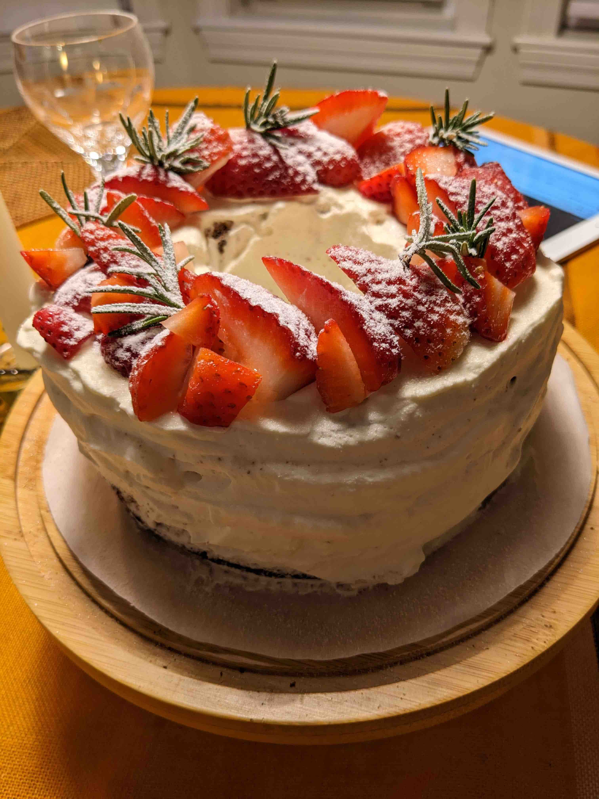

Table of Contents
1. はじめに
今年のクリスマスもホールチキンを買って、オーブンでローストしました。 Whole Foodsで売っている丸ごとのロティサリーチキンもコスパ最高で十分美味しいですが、自分で作ったローストチキンもとても美味しいです。
2. 作り方をネットで調べる
年に一度で作り方をすっかり忘れているため、まずはネットで下調べをします。
- https://cafedelites.com/garlic-herb-butter-roast-chicken/
- 確か去年も参考にしたレシピ。分量は載っておらず、適当です。
- https://s.recipe-blog.jp/profile/12423/recipe/681420
- こちらも去年見たような。バリエーションがいくつかあります。
いろいろと調べるとわかりますが、味付けもオーブンの温度も焼く時間も結構幅があります。 よほどのことがない限り失敗しないメニューなんですね。。。
3. 材料
- ホールの若鶏推定1.2kg。Whole Foodsで購入。
- 人参3本。アメリカの人参は小さくて細長いです。
- 玉ねぎ中1個
- セロリ1本
- 生ハーブ
- 写真右からローズマリー、タイム。今回はオレガノも追加しましたが、無くても良かったかも
- バター25gくらい(適当)
- オリーブオイル25gくらい(適当)
- ガーリック小片(大きめ)3個くらい
- 塩(適当)
- 胡椒(適当)
4. 作り方
鶏に下味をつけたあとで３時間ほど休ませ、オーブンに入れてから２時間はかかるため、トータルで６時間以上のコースになります。そこで、午前中から準備を始めました。
4.1. 前半
4.1.1. 野菜の準備
- 玉ねぎ、にんじん、セロリを1cm^3角に切ってオーブン用トレイに投入する
4.1.2. ガーリックバター用意
- バターを切って室温で放置
- オリーブオイル投入
- 塩コショウ投入
- ガーリックをみじん切りにして投入
- ハーブ類を細かく切って投入(量は適当)
4.1.3. チキンの準備
- パッケージから鶏を出し、全体と腹の内側をきれいに水洗いする
- キッチンペーパーで水気を拭き取る
- ガーリックバターを塗りたくる
- 皮の下にも手を入れ、ガーリックバターを塗る
- 枝のままのハーブ各2本ずつくらいと野菜を腹に詰める
- 腹の穴を爪楊枝2本くらい使って留める
- チキンに塩コショウをまんべんなく振りかける
- 胸やモモの部分を中心に多めに塩を刷り込む
- 鶏と野菜の入ったオーブン用トレイごと冷蔵庫に入れて味をなじませる

4.2. 後半
夕食３時間半前に準備の後半を始めます。
4.2.1. オーブンで焼く
- 焼く1時間前くらいに冷蔵庫から出して常温に戻しておく
- オーブンの温度を380度F(190度Cくらい)にセットする
- 温度が上がったら鶏の入ったトレイをオーブンにセットする
- 30分後取り出し、トレイに溜まった汁を鶏にかけてオーブンに戻す
- まだ汁は出ていませんでした
- 30分後もう一度同じことをする。焦げ目をつけるために、オーブンの温度を430度F(220度Cくらい)に上げる
- 今度は汁が出ていましたが、例年と比べて少量でした。小さめだし、いまいちな鶏だったかも
- 途中で焦げてきたら鶏にアルミホイルをかける
- 更に30分後、オーブンを消してそのまま30分放置する
- 盛り付けて完成
- 乾燥気味なためか、皮にシワが寄ってしまいました。やっぱり今年の鶏はいまいち。
5. 完成
年に一度の奮発シャンパンと共にいただきます。
5.1. 反省事項
- 今回は、買ってきた鶏が元々そうだったのか、設定温度が高すぎたのかわかりませんが、ジューシーさが足りませんでした。モモなのにパサパサ気味
- 白ワインを使うとジューシーになるという噂あり??
- 全体的に塩気がもう少し欲しかったです。ガーリックバターに塩をもっと入れるべきでした
食後のケーキ。余ったローズマリーでクリスマスツリー風。アップルティーと共に。 